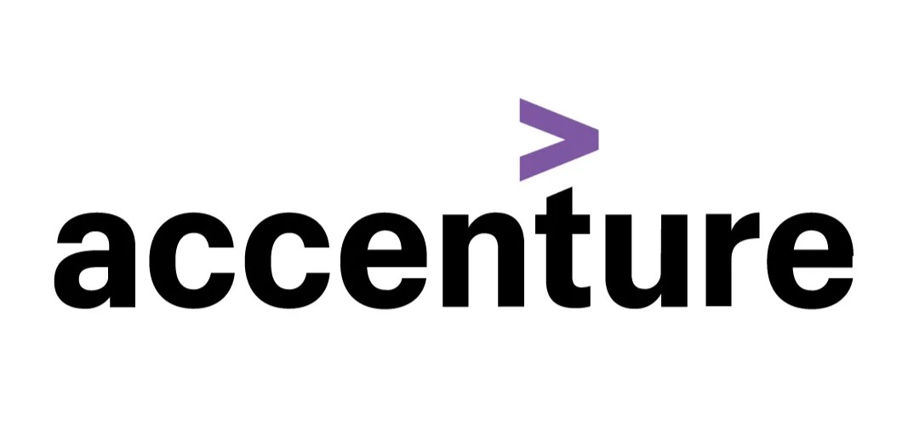

November 2024
The project explores key factors behind movie profitability by examining genres, budgets, and directors’ influence on ratings and box office success. Insights help producers and investors understand what drives movie performance and optimize for profitable outcomes.


The project examines key metrics in recruitment to identify factors that impact efficiency and candidate success. By analyzing applicant data, interview outcomes, and hiring timelines, this project provides insights to streamline the hiring process, and support data-driven decisions.

In this project, I analyzed sales data for Atliq Hardware, a national computer hardware and peripheral manufacturer, using Excel for data analysis and Power BI for dashboard creation. The insights provided helped visualize sales trends, regional performance, and product demand, offering Atliq valuable data-driven perspectives to support strategic decisions.

In this project, I used SQL and MySQL Workbench to analyze user interactions and engagement on Instagram. By examining patterns in user activity, post frequency, and content preferences, I provided actionable insights to help optimize marketing strategies, improve user experience, and drive engagement, contributing to Instagram’s growth objectives.

As part of Accenture North America's Forage job simulation, I analyzed content trends and user engagement patterns across platforms for Social Buzz a social media platform. Using data visualization and analytical tools, I identified key topics driving user interaction, providing insights to help shape strategic decisions for Social Buzz.